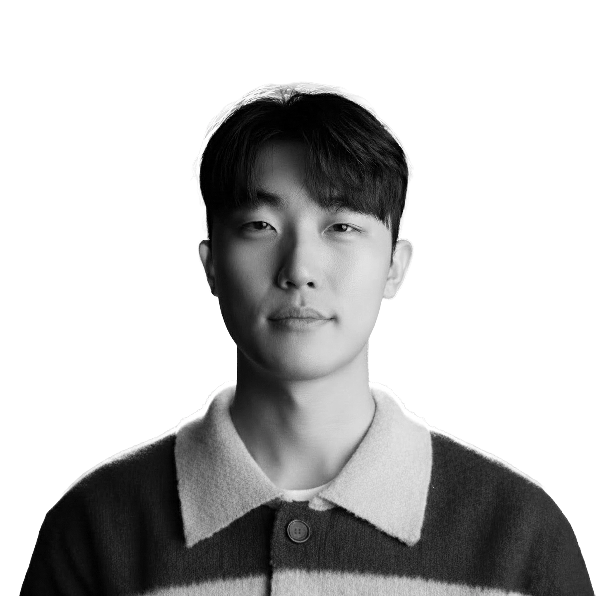
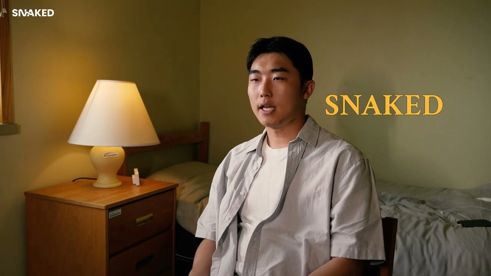
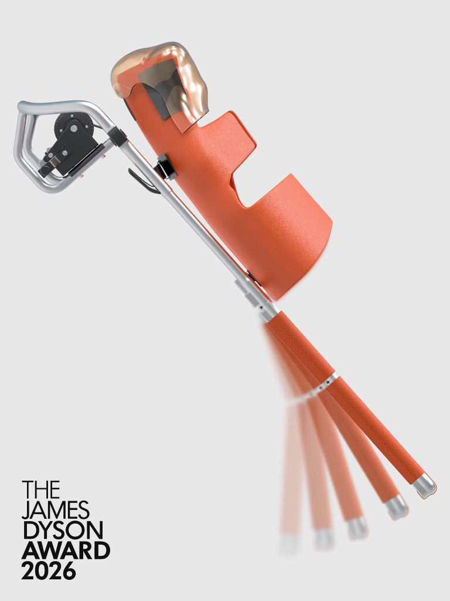
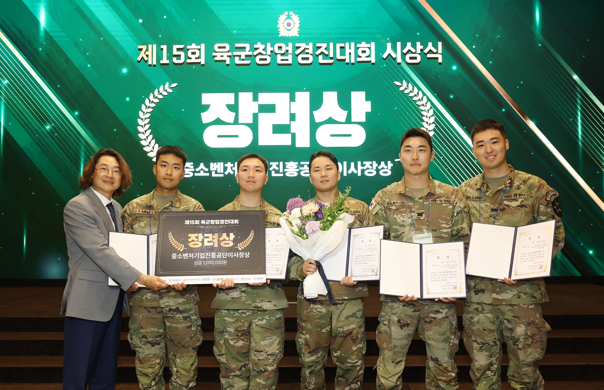
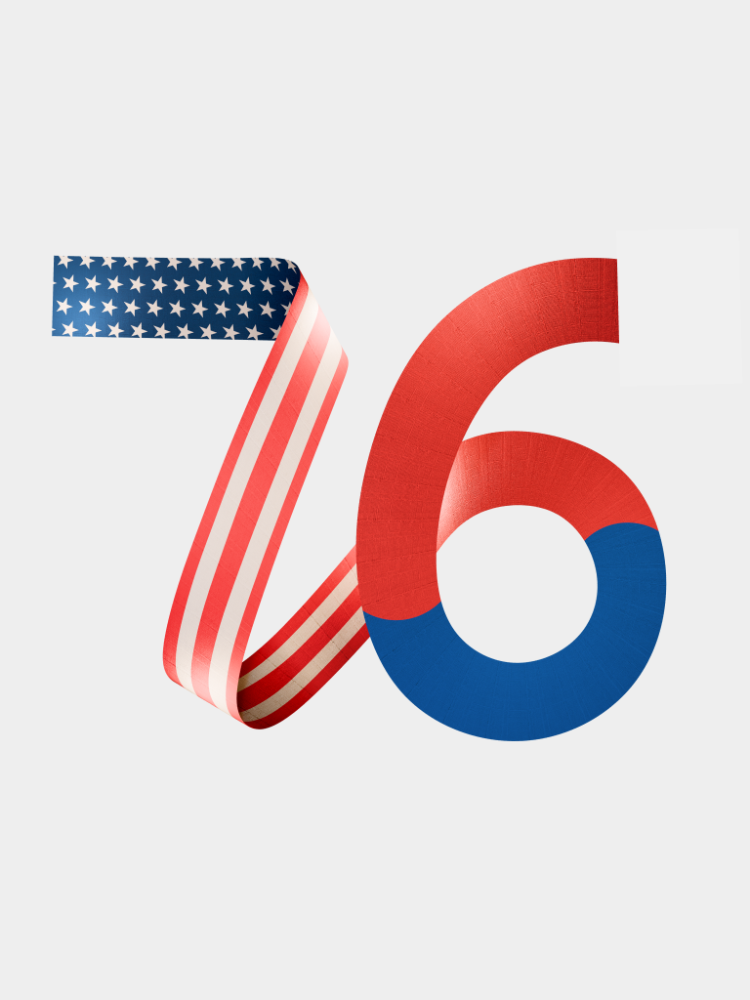

C H I D
Choi. Eun Jun Eun Jun Choi — Industrial / Product Designer
"Where aesthetic vision meets uncompromising feasibility."
Good design has to work in the real world. As an industrial designer, I test ideas with full-scale mockups and technical research, and I keep checking them against how they will actually be made. The timeline below shows that work across products, branding and interactive projects.

Education
(Seoul, Korea)
Bachelor's degree in Industrial Design (Product Design)
홍익대학교 서울캠퍼스 미술대학 / 디자인학부 산업디자인전공(제품디자인)
2023.03 ~ 2028.03
(Berlin, Germany)
Summer School Exchange
베를린 공과대학교 / 여름학기 교환학생
2024.07 ~ 2024.08
Experience
2026
Award (National Finalist)
제임스 다이슨 어워드 2026 / 제임스 다이슨 재단
2026.01 – 2026.09
Stretchers have been designed to be light and easy to store. But in collapsed buildings, winding passages and on steep slopes, their straight, rigid frame becomes the problem: it cannot follow the path a rescuer has to take.
기존 들것은 가볍고 보관하기 쉬운 방향으로 발전해 왔습니다. 하지만 붕괴된 건물이나 굽은 통로, 가파른 경사에서는 곧고 단단한 프레임이 오히려 걸림돌이 됩니다. 구조대원이 지나가야 하는 경로를 따라가지 못하기 때문입니다.
The idea came from handling U.S. Army rescue equipment during my KATUSA service. SNAKED is a stretcher that bends at the patient's hip joint. I proposed the telescopic upper frame and designed the mechanism that controls the bend: turning a winch reels an internal wire in or out, and its tension adjusts the angle of the lower section in small steps. The winch is an off-the-shelf part; the engineers on the team helped set the gear ratio and the wire anchor points.
카투사 복무 중 미군 구조 장비를 직접 다뤄 본 경험에서 출발했습니다. SNAKED는 환자의 고관절 위치에서 꺾이는 들것입니다. 저는 상체부 텔레스코픽 프레임을 제안했고, 꺾이는 각도를 조절하는 메커니즘을 설계했습니다. 윈치를 돌리면 내부 와이어가 감기거나 풀리고, 그 장력으로 하체부 각도를 조금씩 조절하는 방식입니다. 윈치는 기성품을 활용했고, 기어비와 와이어 연결 위치는 엔지니어 팀원들의 도움을 받아 정했습니다.
I also produced the team's visual material: renderings, photography and the project film. We built a 1/10-scale model and a full-scale prototype on a custom-made metal frame.
팀의 시각 자료도 제가 맡아 렌더링, 사진, 프로젝트 영상을 제작했습니다. 1/10 스케일 모형과, 금속 프레임을 주문 제작한 실물 크기 프로토타입을 만들었습니다.
SNAKED was selected as a National Finalist for the James Dyson Award 2026 in Korea, and we presented the prototype to the judges in person at the final on-site review. It did not place in the national top three.
James Dyson Award 2026 국내 파이널리스트로 선정되어, 최종 현장 심사에서 심사위원단에게 프로토타입을 직접 시연했습니다. 국내 Top 3 입상에는 이르지 못했습니다.

The Story of SNAKED
2026 · Product Design
James Dyson Award 2026

SNAKED Stretcher
2026 · Product Design
James Dyson Award 2026
Award (Encouragement Award, KOSME Chairman’s Award)
제15회 육군창업경진대회 / 대한민국 육군
2026.03 – 2026.05

Tessera is an offline system for managing personnel information in military units. An NFC chip goes into the dog tag, which every soldier already wears, and a dedicated reader reads it.
Tessera는 부대 안의 인원 정보를 오프라인으로 관리하는 시스템입니다. 모든 군인이 이미 몸에 지니고 있는 군번줄에 NFC 칩을 넣고, 전용 리더기로 정보를 읽습니다.
Military data cannot travel over external networks, so the data on the tag is encrypted and can only be decoded by the reader. Four of the five team members were software engineers, and I was the only designer. I designed the reader and all of the team's visual materials. I designed the reader around two requirements: anyone should be able to use it without instructions, and it should be easy to store inside a unit.
군의 특성상 외부 네트워크를 쓸 수 없어, 칩의 데이터는 암호화하고 리더기에서만 해독하도록 했습니다. 팀원 5명 중 4명이 소프트웨어 엔지니어였고, 디자인은 저 혼자 맡았습니다. 리더기 디자인과 팀의 시각 자료 전반을 담당했습니다. 리더기는 설명 없이도 바로 쓸 수 있을 것, 부대 안에서 보관하기 쉬울 것 두 가지를 기준으로 디자인했습니다.
The competition drew 651 teams (1,387 participants); 42 reached the final round and 11 received awards. Tessera received the Encouragement Award (KOSME Chairman's Award).
대회에는 651개 팀(1,387명)이 참가해 42개 팀이 결선에 올랐고, 그중 11개 팀이 수상했습니다. Tessera는 장려상(중소벤처기업진흥공단 이사장상)을 받았습니다.

15회 육군창업경진대회 시상식···미래를 열다 KFN 국방뉴스 [국방홍보원]
2026 · YouTube
KFN 국방뉴스

Tessera
2026 · Product Design
제15회 육군창업경진대회
Public Affairs Specialist (KATUSA)
대한민국 육군 카투사 / 주한미8군 본부 공보과 정훈병
2025.06 – 2026.12

I serve as a Public Affairs Specialist at U.S. Eighth Army Headquarters, producing visual material and handling public relations for a large multinational organization.
주한미8군 본부 공보과에서 정훈병으로 복무하며, 다국적 조직의 시각 자료 제작과 홍보 업무를 맡고 있습니다.
My main design work was the logo for KATUSA–U.S. Soldier Friendship Week 2026 (KFW). KFW is the largest event U.S. Forces Korea holds each year for Korea–U.S. friendship, separate from the event hosted by Pyeongtaek City. Its main venue is Camp Humphreys, and events take place at every USFK installation on the peninsula. By tradition, the logo is built around the age of the alliance, which is 76 in 2026.
가장 큰 디자인 업무는 2026 한미친선주간(KFW)의 메인 로고였습니다. KFW는 주한미군이 매년 여는 한미 친선 행사 중 가장 큰 행사로, 평택시가 주최하는 행사와는 별개입니다. 캠프 험프리스를 중심으로 한반도의 모든 주한미군 기지에서 열립니다. 로고에 그해의 동맹 연수를 담는 전통에 따라, 2026년 로고는 숫자 '76'을 중심으로 디자인했습니다.
The logo was used across the event, on plaques, banners, flyers and posters. I also photograph and film unit events; my published work is on DVIDS.
이 로고는 상패, 현수막, 플라이어, 포스터 등 행사 전반에 쓰였습니다. 부대 행사 사진과 영상 촬영도 맡고 있으며, 게시된 작업은 DVIDS에서 볼 수 있습니다.

United States of America
Defense Visual Information Distribution Service
2026 · Photography & Visual Storytelling
United States of America

KFW 2026
2026 · Branding
Eighth Army Headquarters
2025
Freelance Industrial Design
프리랜스 의료기기 제품 디자인 / 코리아메드
2025.01 – 2025.06
Disposable suction liner bags hold infectious fluids in operating rooms, but their soft material makes them unstable, which can lead to medical accidents.
수술실에서 감염성 체액을 담는 일회용 석션 라이너 백은 재질이 흐물거려 형태가 불안정하고, 이것이 의료 사고로 이어질 수 있습니다.
I took this on as a freelance project for COREAMED and worked on it alone. Borrowing the origami folding used in satellite structures, I designed a liner that packs flat and holds a rigid shape once expanded. I built and tested 20 prototypes in 3D-printed TPU, then completed the production CAD for mold making and handed it over to the company.
코리아메드의 의뢰를 받아 혼자 진행한 프리랜스 프로젝트입니다. 인공위성 구조에 쓰이는 오리가미 접기 방식을 가져와, 포장할 때는 납작하게 접히고 펼치면 단단한 형태를 유지하는 라이너를 설계했습니다. TPU 3D 프린팅으로 프로토타입 20개를 만들어 검증했고, 금형 제작용 양산 설계 모델링까지 마쳐 회사에 전달했습니다.
The product did not reach mass production because of circumstances at the company, but COREAMED valued the idea and its feasibility enough to file a patent on it under the company's name.
회사 사정으로 판매용 양산까지는 이어지지 않았지만, 코리아메드는 아이디어와 실현 가능성을 높게 평가해 회사 명의로 특허를 출원했습니다.

Foldisafe
2025 · Product Design
COREAMED
Concept Lead & 3D Visualizer
제품디자인 및 시각화 / 삼성생명 라이프놀로지랩 산학 프로젝트
2024.09 – 2025.03

Samsung Life Insurance's Life-nology Lab set the brief 'insurance beyond insurance': move past paperwork, contracts and claims, and design physical products that prevent problems in daily life instead of compensating for them afterward.
삼성생명 라이프놀로지랩은 '보험을 넘어선 보험'을 주제로 과제를 냈습니다. 서류와 계약, 보상에 머무르던 보험에서 한 걸음 나아가, 사고를 사후에 보상하는 대신 일상 속에서 미리 예방하는 솔루션을 피지컬 제품으로 만드는 것이었습니다.
The core idea was mine: correct small, everyday posture habits using the body's skeletal structure as the reference. Seesaw is a set of gyro-sensor wearables for active seniors that tracks posture and gait and gives feedback in real time. On a team of four designers, I led the concept and handled the 3D visualization. Because it is worn all day, we put comfort first and shaped it to look like an everyday accessory rather than a medical device.
골격 구조를 기준으로 사소한 일상 속 자세를 교정한다는 핵심 아이디어를 제가 냈습니다. Seesaw는 자이로 센서로 자세와 걸음걸이를 추적해 실시간으로 피드백하는, 액티브 시니어를 위한 웨어러블입니다. 디자이너 4명 중 저는 콘셉트 기획과 3D 시각화를 맡았습니다. 하루 종일 착용하는 기기인 만큼 착용감을 우선했고, 의료기기처럼 보이지 않도록 일상 액세서리에 가까운 외형으로 다듬었습니다.
We made three prototypes and two full-scale models. The project was shown at Samsung Life's in-house exhibition and at a one-week pop-up store in Seongsu, Seoul.
프로토타입 3개와 실물 크기 모형 2개를 제작했습니다. 결과물은 삼성생명 사내 전시와 성수동 팝업스토어(1주일)에서 공개되었습니다.

Seesaw
2025 · Wearable Device Design
Samsung Life Insurance
2024
Organizing Team & Head of Promotion
전시 기획 및 콘텐츠 디자이너 / 홍익대학교 x 한국예술종합학교 오리너구리 프로젝트 연합전시
2024.07 – 2025.03

Platypus Project is a joint exhibition by students of Hongik University and the Korea National University of Arts, created for ideas that usually get dropped because they don't fit a target audience or a market. Of the 53 participants, 47 exhibited, showing 13 works across design, fine art and dance.
오리너구리 프로젝트는 타깃이나 상업성에 맞지 않는다는 이유로 버려지던 아이디어를 위해 시작한 홍익대학교·한국예술종합학교 연합 전시입니다. 53명이 참여했고(전시 참여 47명), 디자인·순수미술·무용 분야의 작품 13점을 선보였습니다.
I was on the organizing team, which ran the whole exhibition, from signing the venue contract to day-to-day operations. Within the team, I led promotion: I ran the Instagram account, shot reels and other promotional content, and archived the exhibition. As an exhibitor, I also designed a pixel-art game, modeled its booth, and cut the wood to build it myself.
기획팀의 일원으로 전시장 계약부터 운영까지 전시 전반을 팀원들과 함께 진행했고, 그중 홍보를 이끌었습니다. 인스타그램 운영, 릴스 촬영 등 홍보 업무와 전시 아카이빙을 맡았습니다. 전시 참여자로서는 픽셀아트 게임을 디자인하고, 부스를 모델링한 뒤 직접 나무를 재단해 제작했습니다.
The exhibition ran for two weeks, from March 10 to 23, 2025, at Pli in Seongsu, Seoul.
전시는 2025년 3월 10일부터 23일까지 2주간 서울 성수 플리에서 열렸습니다.
Platypus Project 2025
2024–2025 · Exhibition
Hongik Univ. × K-Arts
VR Game Content Designer
VR 게임 콘텐츠 디자이너 / 베를린 공과대학교 (여름학기 교환학생)
2024.07 – 2024.08

At the TU Berlin summer school, I joined an international team of five (two designers and three developers from Korea, Singapore, Brazil and the U.S.) to build a VR game for Meta Quest 3.
베를린 공과대학교 여름학기에서 한국, 싱가포르, 브라질, 미국 출신의 5명(디자이너 2명, 개발자 3명)이 팀을 이뤄 Meta Quest 3용 VR 게임을 만들었습니다.
It is a casual game in which players pop balloons flying toward them. The other designer worked out the story and structure; I made the 3D assets in the game, the presentation materials and the animated trailer. We finished with a working, playable build.
다가오는 풍선을 터뜨리는 캐주얼 게임입니다. 다른 디자이너가 스토리와 구성을 맡았고, 저는 게임에 들어가는 3D 에셋과 발표 자료, 트레일러 애니메이션을 만들었습니다. 결과물은 실제로 플레이할 수 있는 완성본입니다.
The main thing I learned: to make a virtual space feel immersive, objects have to follow real-world physics closely.
가상 공간의 몰입감을 높이려면 오히려 현실의 물리 법칙을 정교하게 따라야 한다는 것을 배웠습니다.

Invasion
2024 · XR Interaction Design
TU Berlin
2023
Product Design Exhibition
연합 전시 개인작 참가 / 서울대학교 x 홍익대학교 x 국민대학교 디자인 연합 전시
2023.09 – 2024.03
A personal project for a joint exhibition of first-year design students from Seoul National University, Hongik University and Kookmin University. It started from one scenario: a user whose memory resets every 24 hours.
서울대·홍익대·국민대 디자인 전공 1학년 연합 전시에 낸 개인 프로젝트입니다. '24시간마다 기억이 초기화되는 사용자'라는 시나리오에서 출발했습니다.
I assumed this user would have to produce their own power to get through each day, and designed a shoe that turns the pressure of walking into electricity. The hard part was fitting the mechanical parts into a form that still reads as a shoe. I built a full-scale, non-working mockup for the exhibition.
이 사용자는 하루를 버티기 위해 스스로 전력을 만들어야 한다고 보고, 걸을 때의 압력을 전기로 바꾸는 신발을 디자인했습니다. 기계 부품을 넣으면서도 신발로 읽히는 형태를 만드는 것이 가장 어려운 부분이었습니다. 전시용으로 작동하지 않는 실물 크기 목업을 제작했습니다.

Cosmo-es 2024
2024 · Product Design
개인작 전시
UX/UI & Brand Designer
UX/UI 및 브랜드 디자인 / 한양대학교 창업동아리
2023.05 – 2024.03
I joined a Hanyang University startup team building a survey platform for college students. The service needed a website, and I was the only designer on the team.
대학생을 위한 설문조사 플랫폼을 준비하던 한양대학교 창업팀에 합류했습니다. 서비스에 웹사이트가 필요했고, 팀의 디자이너는 저 한 명이었습니다.
I designed the logo and brand identity, the promotional materials and the website UI, keeping one visual tone from the brand through to the screens users actually used.
로고와 브랜드 아이덴티티, 홍보물, 웹사이트 UI를 디자인했고, 브랜드에서 실제 사용 화면까지 하나의 톤으로 이어지도록 했습니다.
The service reached beta testing. The project wound down when core members left to look for jobs.
서비스는 베타 테스트까지 진행되었고, 핵심 멤버들이 취업 준비에 들어가면서 프로젝트가 마무리되었습니다.
Startup Team Project
2023-2024 · UX/UI & Branding
Hanyang University